Verbatim — collaudo del frontend su one.giobi.com
La pagina esiste, mostra i 355 transcript caricati, la ricerca passa dall'indice full-text e le lenti filtrano quello che dicono di filtrare. Due difetti sono stati trovati dal browser e corretti prima di questo report; uno resta aperto e non riguarda Verbatim.
Il problema che risolve. Fino a ieri le trascrizioni delle riunioni vivevano dentro Read.ai, una per link, senza un posto dove cercarle tutte insieme. Verbatim è quel posto: un archivio solo, e sopra una barra di lenti — domande salvate tipo "gli ultimi 30 giorni" o "quelli ancora da rivedere" — più una casella che cerca dentro il testo di tutti i transcript insieme.
Perché le lenti e non le cartelle. Una cartella costringe ogni transcript ad avere una casa sola. Una lente no: lo stesso transcript compare in tutte le lenti che lo descrivono, e niente va archiviato a mano da nessuno. Il colore della lente dice che tipo di domanda fa: blu lo stato, grigio la sorgente, rosso quello che è stato buttato.
Dove si apre. https://one.giobi.com/verbatim — solo da tailnet, come tutto il resto di one.
- 355 transcript in archivio, 41 negli ultimi 30 giorni: sono i numeri scritti in alto a destra e nella lente attiva.
- La lente di partenza è Recenti: gli ultimi 30 giorni, senza gli scartati. L'archivio intero resta a un click, sotto Tutto.
- Ogni lente porta il suo numero accanto al nome, e una riga che spiega cosa include quando è quella attiva.

- Grezzi mostra 355 righe: tutto quello che è arrivato da Read.ai è ancora da rivedere.
- Read.ai mostra le stesse 355 da un'altra angolazione — per sorgente invece che per stato.
- Le altre sorgenti (Echelon, Extension, Mobile, Legacy) stanno a zero: il plug esiste, non ha ancora scritto. È diverso da "non esiste".
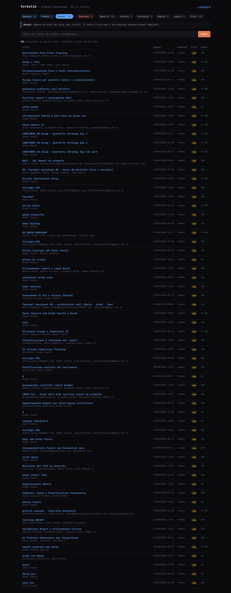
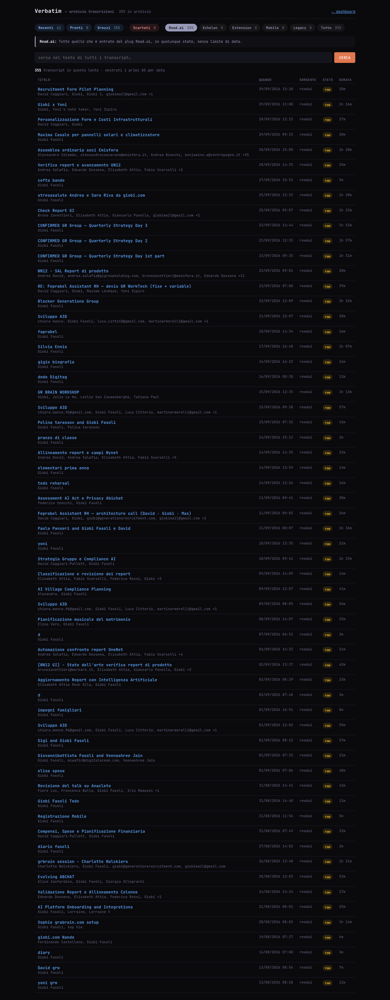
- "recruitment" trova 53 transcript su 355, e il numero è scritto sopra la tabella.
- La ricerca si combina con la lente: cercare dentro Pronti dà un risultato diverso da cercare dentro Tutto.
- Una parola che non c'è dà zero risultati e una riga che lo dice, invece di una tabella vuota che sembra un errore.
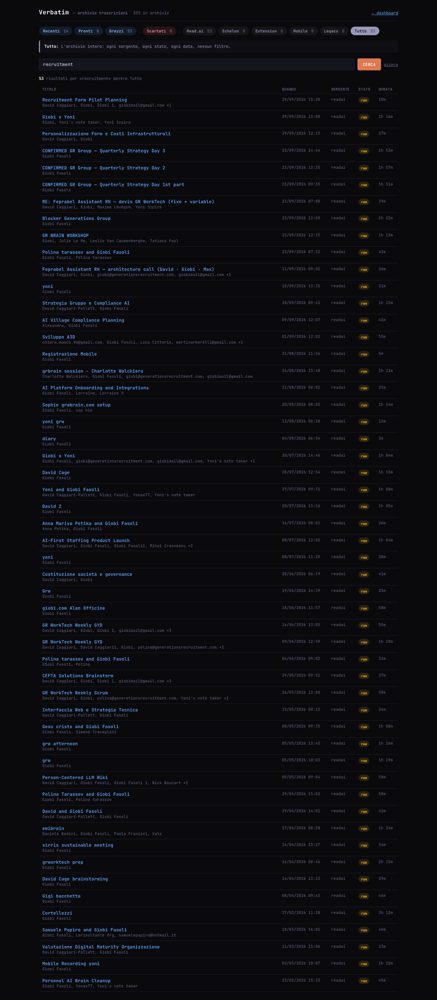
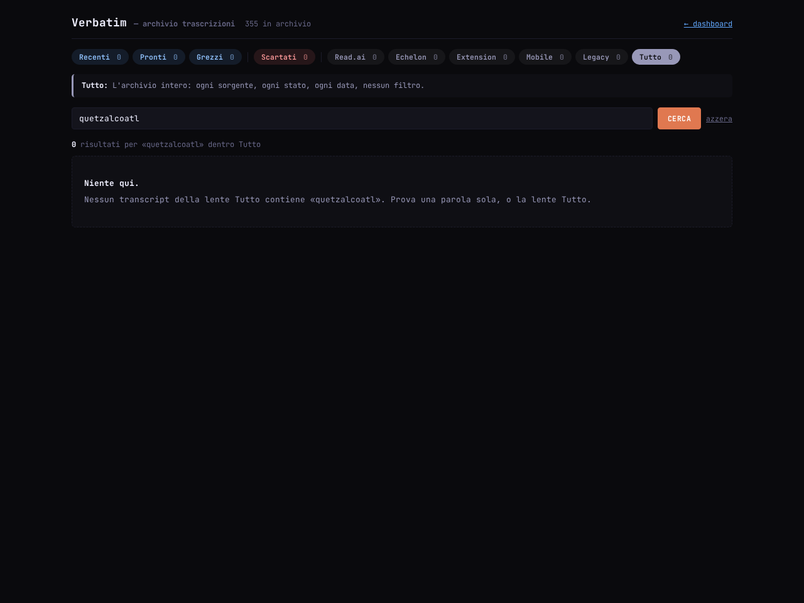
- Una lente che non esiste (
?lens=chenonesiste) riporta a Recenti invece di dare 404: una lente è un link che si manda a qualcuno, e un link che smette di funzionare è peggio di uno che mostra leggermente altro. - Una lente legittima ma vuota (Scartati, zero righe) spiega che la lente non seleziona niente ma l'archivio ha 355 transcript. Non si confonde con una pagina rotta.
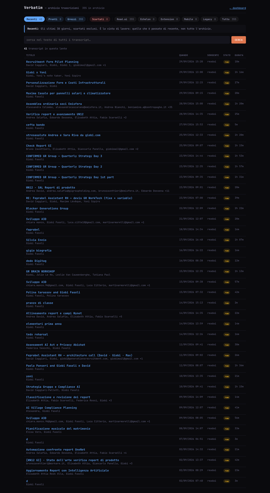
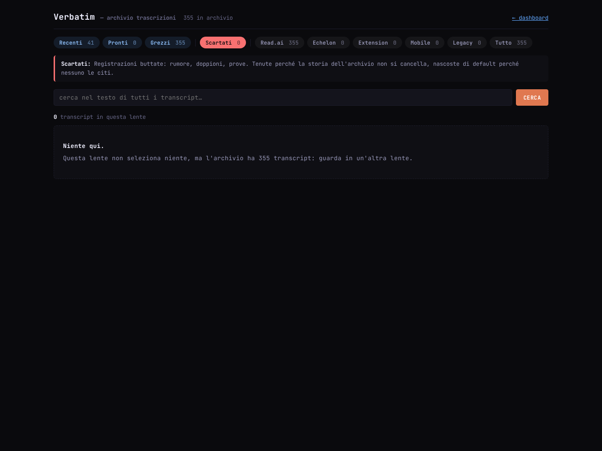
- Titolo, data, sorgente, partecipanti, durata in testa; sotto il parlato diviso per chi parla.
- I transcript senza segmenti — l'import vecchio ne ha sei — mostrano il corpo come un blocco unico invece di una pagina bianca.
- Gli
UNKNOWN_SPEAKERche si vedono nel primo screenshot arrivano da Read.ai: sono nei dati, non nella pagina.
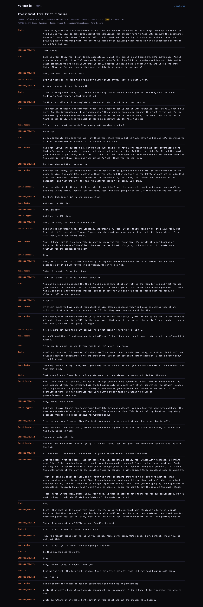
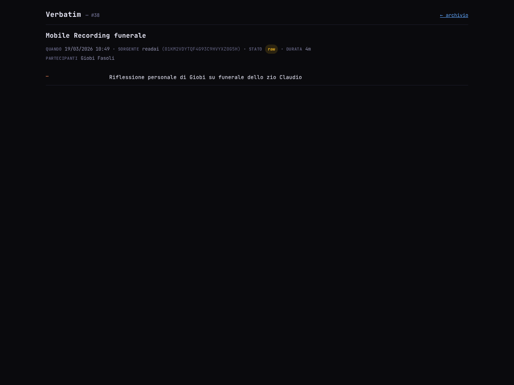
- Difetto trovato dal browser. Su schermo da telefono la tabella sforava: 547 pixel dentro una finestra da 390, e la pagina scivolava di lato. Corretto togliendo sorgente, durata e stato dalle colonne strette e portando lo stato sotto il titolo. Ora non scivola più.
- In dashboard c'è una card verbatim con il totale, quanti negli ultimi 30 giorni e quanti ancora grezzi; cliccandola si apre l'archivio.
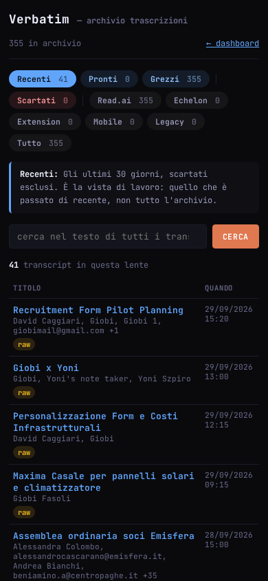
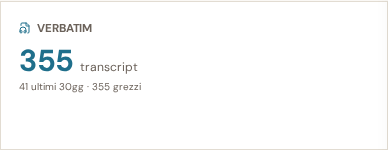
- In dashboard la console segnala un errore 500 su
/api/widgets/airouter. Non è una cosa introdotta qui: lo stesso errore risulta nei log del server anche dalle aperture fatte dal tuo Chrome prima di questo collaudo. La card airouter resta su "carico...". - Sulle pagine di Verbatim la console è pulita: zero errori, zero avvisi, su tutte e nove le viste.
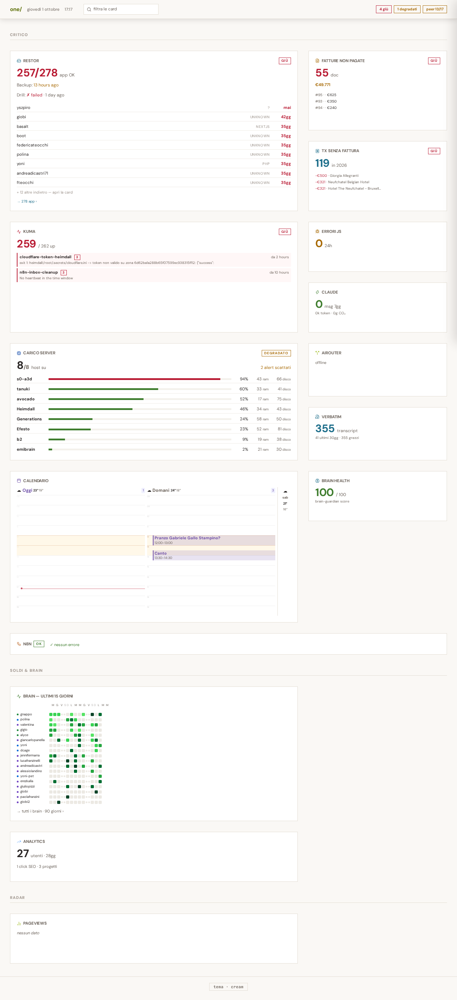
Perimetro
Solo il frontend. Lo schema della tabella transcripts e l'ingest dei 357
transcript Read.ai sono di altri; qui non sono stati toccati. Non è stato toccato nemmeno
/transcript, che è il registratore ambientale del Pi5 su file jsonl.
File
| File | Cosa |
|---|---|
app/Models/Transcript.php | nuovo. Connessione pgsql_brain, cast jsonb, scope matching(), fallback segmenti/corpo |
app/Http/Controllers/VerbatimController.php | nuovo. Lenti, conteggi, ricerca, dettaglio |
resources/views/verbatim/{_style,index,show}.blade.php | nuove |
routes/web.php | blocco aggiunto: /verbatim, /verbatim/{id}, api/widgets/verbatim |
app/Http/Controllers/WidgetController.php | metodo dashVerbatim() aggiunto |
resources/views/dashboard/home.blade.php | card verbatim + fetch pigro |
tests/Feature/VerbatimTest.php | nuovo, 13 test |
Ricerca
La query va sulla colonna generata tsv, che ha un indice GIN:
whereRaw("tsv @@ plainto_tsquery('simple', ?)", [$terms])
plainto_tsquery e non to_tsquery perché la casella riceve parole
scritte da una persona, non sintassi tsquery: un apice sbilanciato deve restringere il
risultato, non alzare un errore di sintassi. Niente LIKE '%...%': l'indice
esiste per essere usato, e un LIKE lo ignorerebbe. Un test monta un listener
sulle query e fallisce se nel percorso di ricerca compare un LIKE o se non
compare tsv @@ plainto_tsquery.
Lenti
Array slug => [label, kind, eli5, query] con query closure che
torna un builder, come da wiki/tech/lenses.md. I conteggi sono calcolati
con la ricerca applicata: con una query sullo schermo, un numero accanto a una lente
che ignora la query direbbe il falso su quello che quella lente mostrerebbe.
| Slug | Kind | Filtro |
|---|---|---|
| recent (default) | state | captured_at >= now()-30d e status != discarded |
| ready | state | status = ready |
| raw | state | status = raw |
| discarded | alert | status = discarded |
| readai, echelon, extension, mobile, legacy | neutral | source = <slug> |
| all | neutral | nessuno |
Tre decisioni che si discostano dalla traccia iniziale, con il motivo:
discardedèalert, nonstate. La palette inlenses.mdassegna il rosso a "ritirato o sbagliato", e uno scartato è esattamente la cosa che nessuno deve citare. Tenerlo blu insieme agli altri stati avrebbe reso il colore una decorazione invece di un significato.- Le sorgenti a zero restano nella barra. Un plug con zero righe dice "esiste e non ha ancora scritto", che è un'informazione diversa da "non esiste" — ed è la domanda che si fa a un archivio in corso di riempimento.
- Nessuna lente per i tag, per ora. La tabella non ha ancora tag: una lente che può
solo mostrare zero allunga la barra e non insegna niente. La costante
TAG_LENSESè vuota e dichiarata: quando i tag arrivano, ogni lente è una riga.
Una lente che non esiste cade sul default. Il controller non fa mai 404 sull'indice.
Test
13 test, nessun mock e nessun RefreshDatabase: girano contro il postgres
vero (brain), perché la pagina si regge su una colonna generata e un indice GIN
che sqlite non sa esprimere — un verde su sqlite non direbbe niente su quello che va in
produzione. Le righe inserite hanno source='test' e ogni test cancella le
proprie in un finally, anche quando un'asserzione esplode. Verificato a fine
giro: zero righe residue con source='test'.
$ php vendor/bin/phpunit --filter VerbatimTest ............. 13 / 13 (100%) OK (13 tests, 59 assertions)
Suite intera di one: 65 test, un solo fallimento,
VaultControllerTest::test_vault_ready_seal_redirects, che è preesistente e
riguarda il bucket S3 configurato nell'ambiente, non Verbatim.
I due difetti trovati dal browser
- Overflow orizzontale su viewport da telefono.
scrollWidth547 suinnerWidth390: la tabella trascinava la pagina. Il test server-side passava lo stesso — l'HTML era corretto, era il layout a non esserlo. Corretto con un contenitore che scorre, colonne sorgente/durata/stato nascoste sotto i 640px e il badge di stato portato sotto il titolo. - Una lente "Test" visibile in produzione. Era stata dichiarata per far asserire al
test il filtro per sorgente. Un bottone in più davanti a Giobi perché comodo alla suite è
un confine bucato: la lente è stata tolta e il test riscritto al contrario — le righe
source='test'non devono comparire in nessuna lente di sorgente reale e devono comparire inall.
Un attrito di ambiente, sistemato
storage/framework/views apparteneva a www-data senza setgid: i
file compilati da un utente non erano riscrivibili dall'altro, e qualunque test che
rendesse una vista appena modificata dava 500 (ExampleTest falliva per questo).
Risolto con chmod g+s sulla cartella e ACL di default; giobi è già
nel gruppo www-data. Nessuna modifica all'applicazione.
Verifica visiva
Playwright da efesto, Chromium headless, 11 pagine, networkidle più attesa,
console e pageerror catturati su ognuna. Zero errori e zero avvisi su tutte le
pagine di Verbatim. L'unico errore è il 500 su /api/widgets/airouter in
dashboard, presente nei log anche prima di questo collaudo e fuori da questo perimetro.